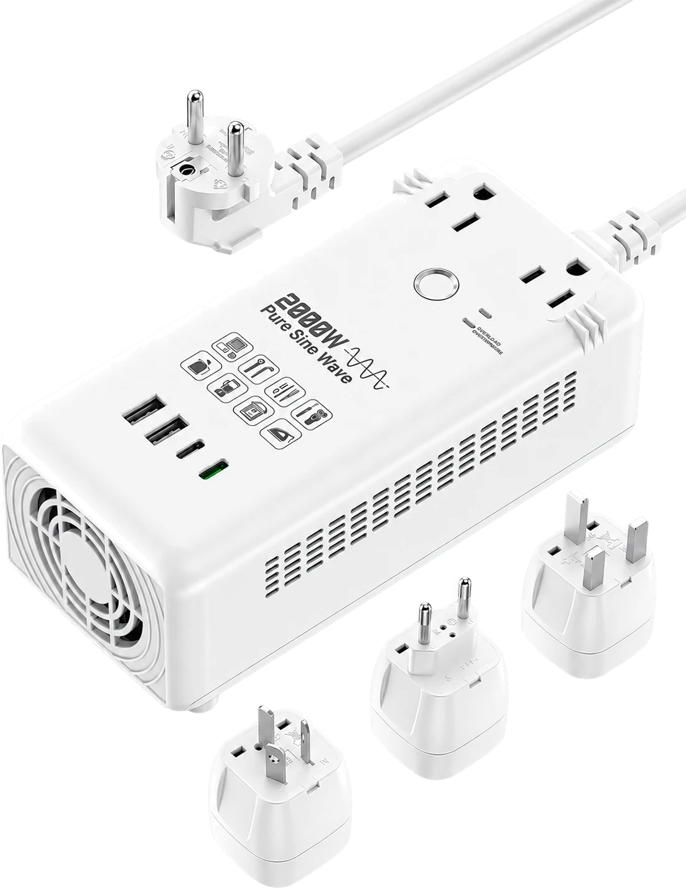
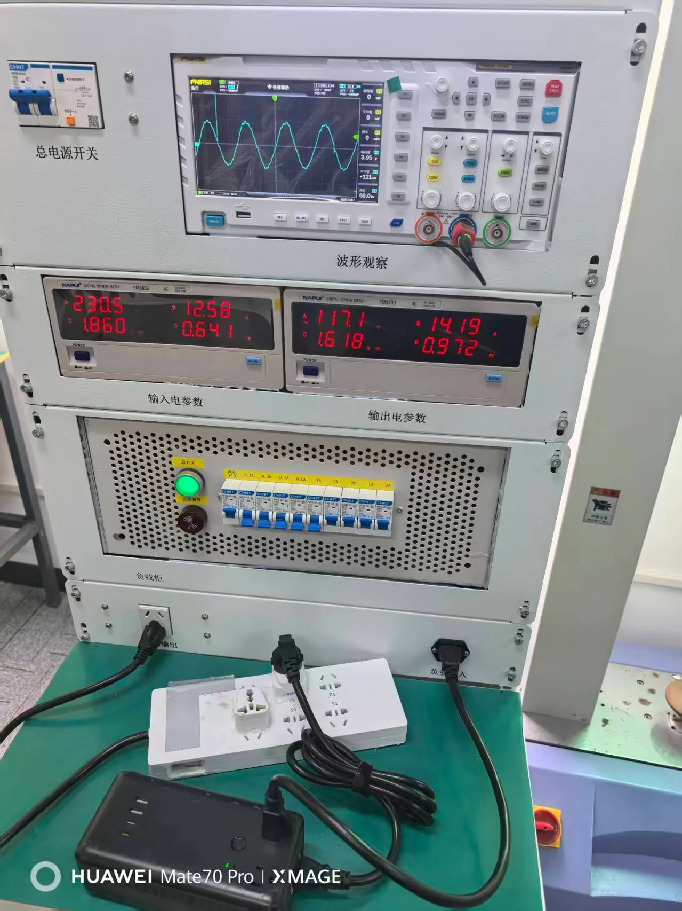
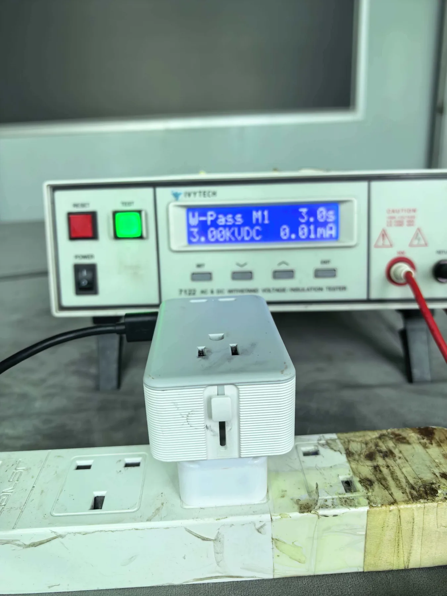
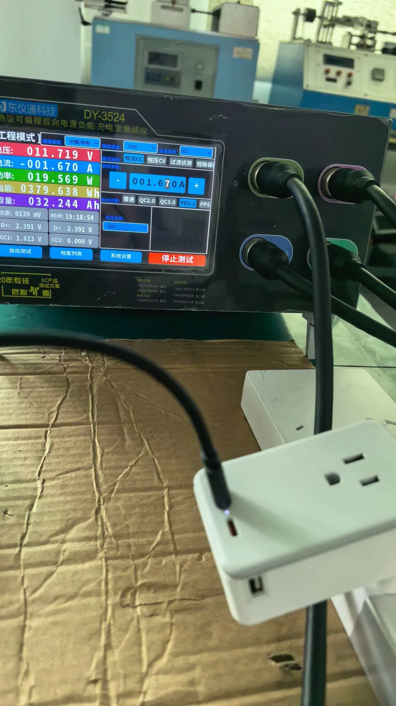
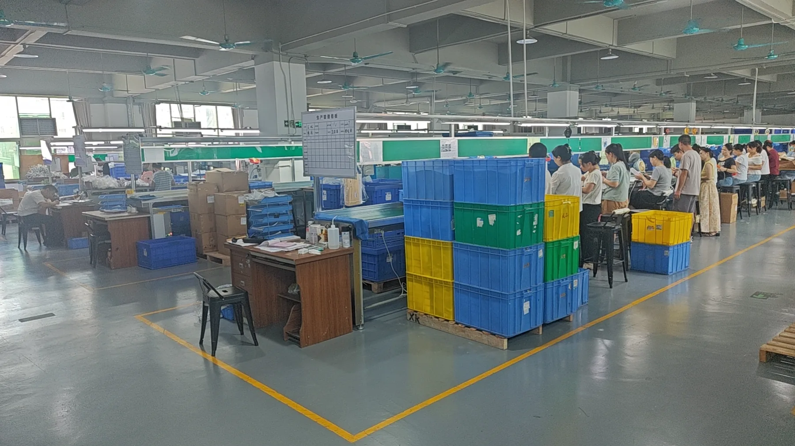
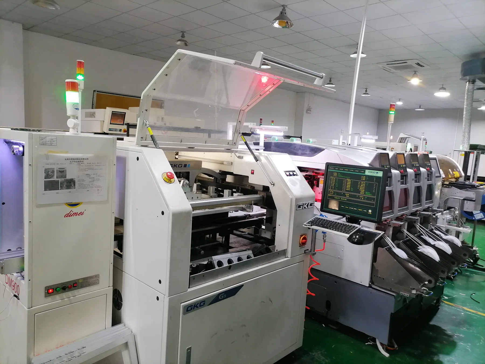

REQUEST A QUOTE
Interested in TUS-11 for Your Brand?
Tell us your target market, expected quantity, plug version, branding and packaging requirements.
sales7@cnlongrich.com
 WhatsApp — Scan to Chat
WhatsApp — Scan to Chat2000W pure sine wave step-down voltage converter for US / JP market projects, with dual AC outlets, USB-C / USB-A charging and EU / UK / AU input plug options.

TUS-11 is designed for projects that need actual step-down voltage conversion rather than simple plug adaptation.
High-power output for compatible 115V appliances within the rated limit.
Stable AC waveform for compatible devices and appliances.
Converts high-voltage input to 115V AC output.
2 AC outlets, 2 USB-C and 2 USB-A ports.

Waveform performance is evaluated with professional electrical measurement equipment during product validation.
USB specifications below follow the confirmed TUS-11 product data currently used as the final website reference.
Model-specific validation can include waveform, load, electrical safety, aging, thermal and durability testing.




Core TUS-11 product data for B2B evaluation.
| Model | TUS-11 |
| Product Type | Pure Sine Wave Voltage Converter |
| Rated Power | 2000W Max |
| AC Input | 230V~, 15A Max, 50/60Hz |
| Each AC Output | 115V~, 15A Max, 60Hz |
| Total AC Output | 2000W Max |
| AC Outlets | 2 × US |
| USB-C1 | 5V/3A, 9V/2.22A, 12V/1.67A (20W Max) |
| USB-C2 | 5V/3A (15W Max) |
| USB-A1 / USB-A2 | 5V/2.4A (12W Max each) |
| Any Two / Multi-Port USB | 5V/3A (15W Shared Max) |
| Plug Options | EU / UK / AU |
| Dimensions | 155 × 78.5 × 55 mm |
| Weight | 830 g |
| Material | PC + Copper |
| Colors | Black / White / Custom |
| MOQ | 1,000 pcs |
| Target Market | US / JP |
| Patent | Patent Pending |
| Packaging | 100 × 122 × 37 mm; 10 pcs / carton |
Compliance wording follows the latest TUS-11 product sheet.
Use the developed 2000W voltage conversion platform for private-label or B2B customization projects.
Tell us your target market, expected quantity, plug version, branding and packaging requirements.
sales7@cnlongrich.com
WhatsApp — Scan to Chat